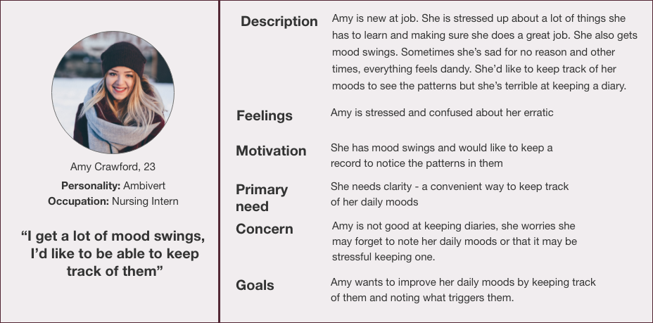
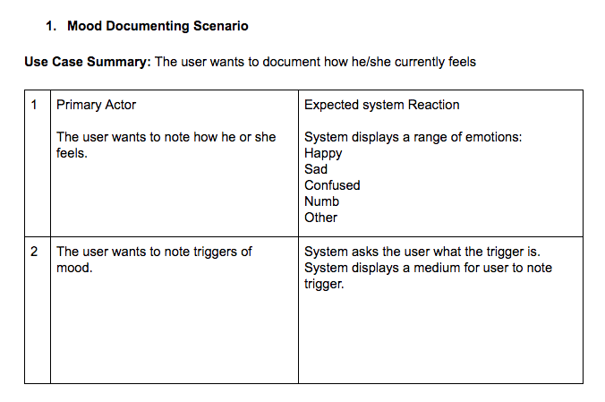
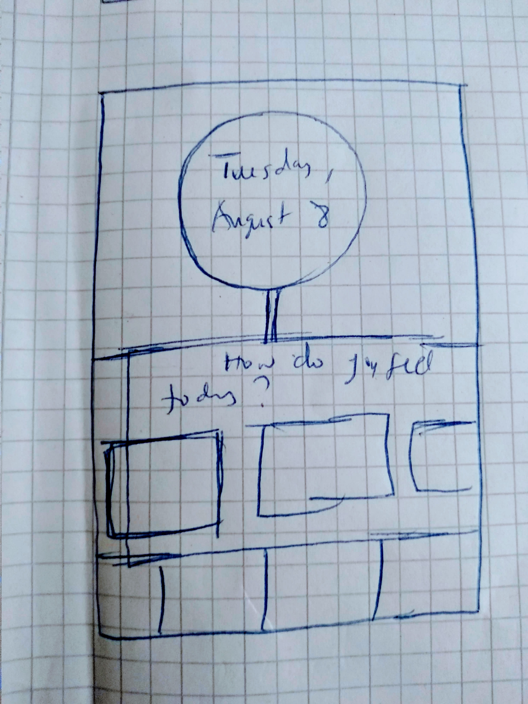
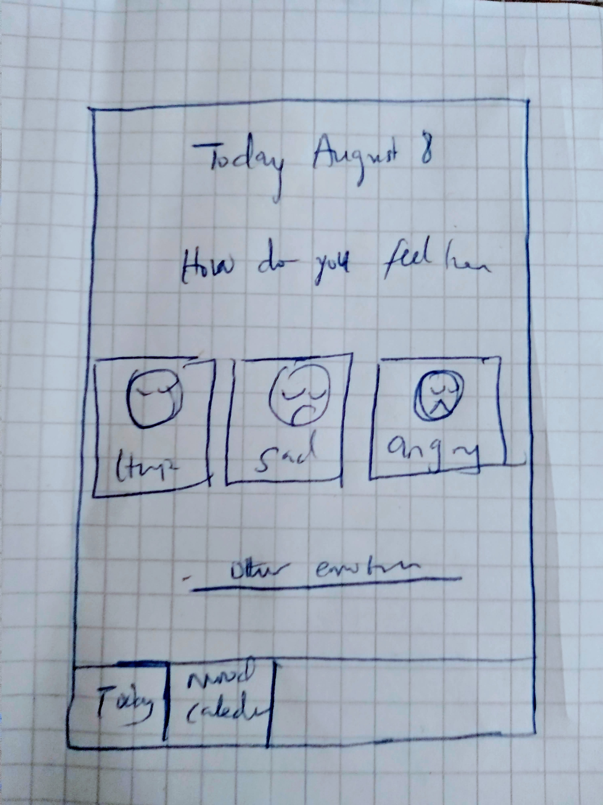

Mood Diary
Designing a mood tracking mobile application
Summary: Mood Diary is a personal project that I explored as someone who wanted to keep track of their moods. It involves designing an app that helps people keep track of their moods and events that trigger them .
The challenge: The challenge of this project was to design a financial service, where people could transfer money through chat, buy airtime vouchers and pay their bills. It was the first of its kind in Nigeria - to offer financial service via a chatbot.
Role: Sole designer
Period: First iteration: August 2018. Updated visual design: July 2019
Target audience: Millennials who are mental health conscious
Process: To design this solution, I went through a series of steps to get the job done:
- Research - Survey:
I used google forms to gather data on how much people would be interested in tracking and document their daily moods, and also to find out their attitudes toward documentation. Number of participants was 5 and they answered the following questions:
- How would you characterize your moods?
- How do you manage them?
- Do you think tracking them can help?
- Do you keep a diary?
- What are your pet peeves about keeping a diary?
- Analysis using Persona: Based on the data gathered, I came up with a persona that best represent the users. 
- Use case scenarios:To understand how to fit in user requirements gotten from Persona into the project, I came up with several Use Case Scenarios that fit into user's goals for all tasks and what the system's response should be. 
- Task flow: To understand how users will perform each task, I listed all possible tasks involved and came up with a typical task flow.

- Sketching: Now that I understand the major tasks involved, the user goals and objectives, I sketched some possible solutions using a paper and a pen and refined it with invision freehand for the purpose of testing.
 
- Testing: I tested my sketches with the a few people from my target group to understand if I have captured their need and solved the problem.
- Hi-fi prototype: With the result of the test, I came up with a prototype. Every so often I change a few things from new insights gotten from potential users.
Outcomes and lessons: Designing this project gave me an insight into how my idea would work. Some day, when I've got some time on my hands, I'd like to develop it.